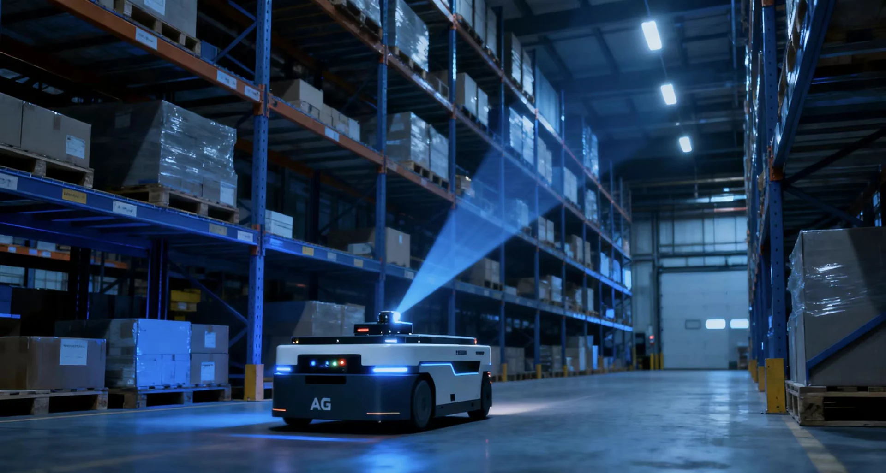
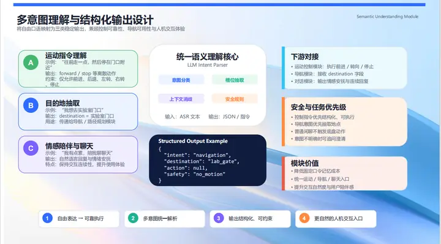

机器视觉
从图像中提取有用的信息。
围绕目标识别、缺陷检测和场景理解，结合多特征融合与轻量化网络，关注视觉算法在实际设备中的应用。
以感知、决策与控制协同，连接智能设备和真实环境。

围绕目标识别、缺陷检测和场景理解，结合多特征融合与轻量化网络，关注视觉算法在实际设备中的应用。
通过定位建图、路径规划与障碍物感知，把环境信息转化为可执行的移动决策。
结合语音识别、语言理解与设备控制，让用户以更自然的方式表达指令和使用需求。
结合语音、视觉和环境上下文，理解自然表达中的模糊指令。
融合测距与图像信息，面向窄道、转向和动态障碍开展感知。
在方案条件允许时，让敏感的健康与环境数据优先在设备侧处理。
对齐不同传感器信号，提升环境变化时的适应能力。
将运动指令、目的地和陪伴对话等意图分别解析，再把结构化结果交给运动、导航或对话模块。

查看完整架构图梳理任务、使用环境与操作需求。
明确感知、导航和交互的配合方式。
围绕场景边界，讨论功能与验证条件。
从使用环境、功能需求和部署条件开始，梳理适合的产品方向。